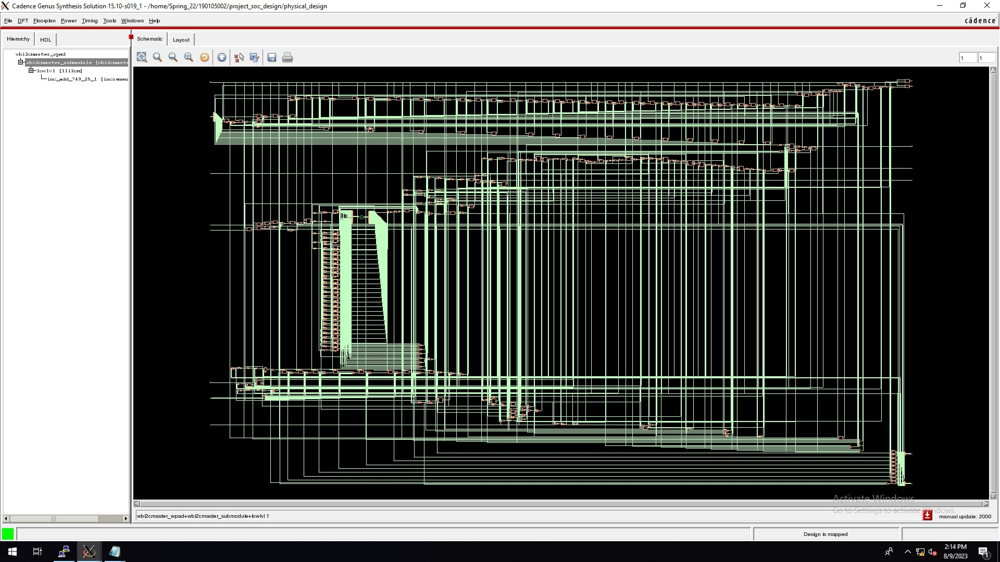

In this project, Verilog HDL is used to implement this design both in core and pad. Physical verification and other results are determined by providing commands in Encounter. After optimizing the CTS we got the desired value of max_cap & max_trans of real Nr nets. But after postRoute optimization we got some undesired values of TNS in Setup mode, WNS & TNS in Hold mode and max_trans in DRVs. All Physical Verification passed except some Connectivity, Geometry and PG Short Violations. Overall, it was a successful implementation of SoC system. Advantages of this system include complete reusability and FPGA compatibility without design changes. The same concept can verify different IPs, enabling cost-effective device development. Further improvements can be made with minor modifications.
🔧 Tools Used
- WISHBONE I2C Master Core
- Encounter
- Genus
📸 Implementation Screenshots
RTL Design

SoC Integration


Placement & Routing


Static Timing Analysis


.jpg)
.jpg)

Physical Verification


Final Implementation


 ← Back to Projects
← Back to Projects